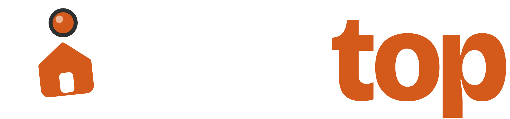
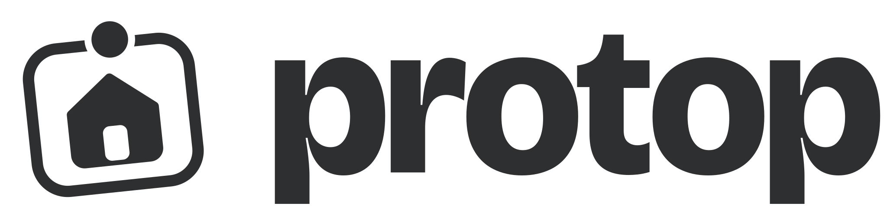
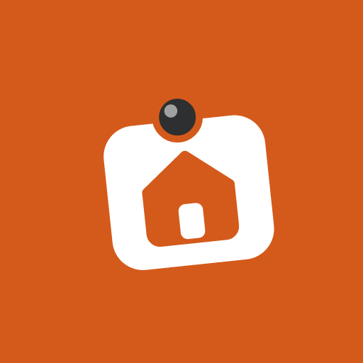
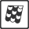
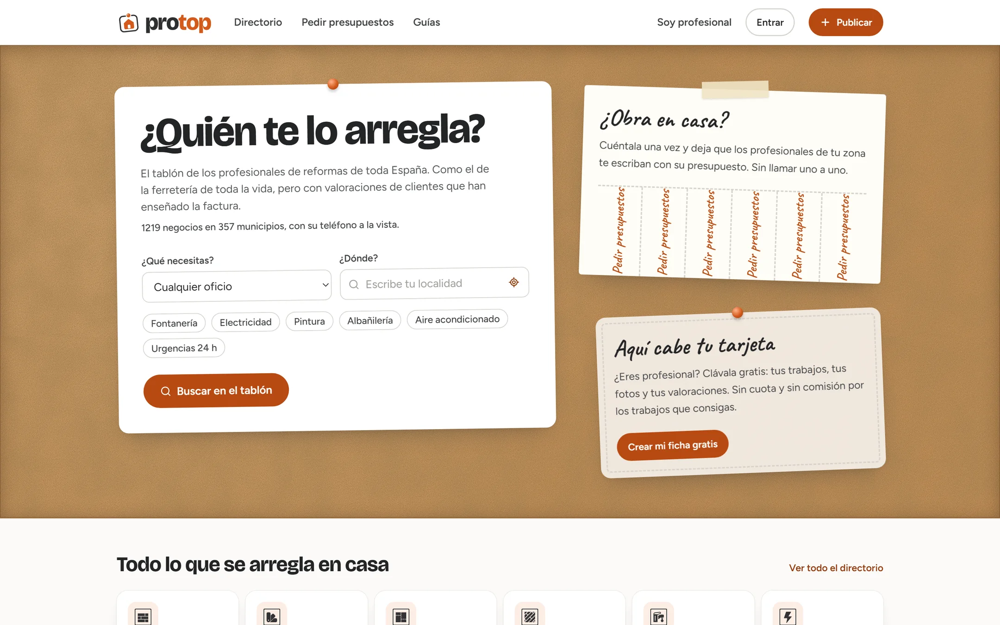
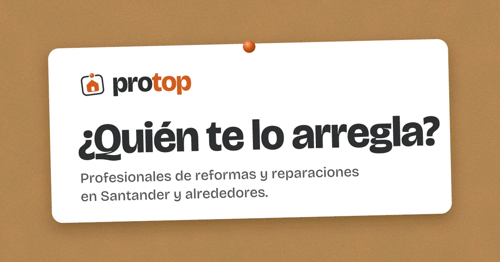
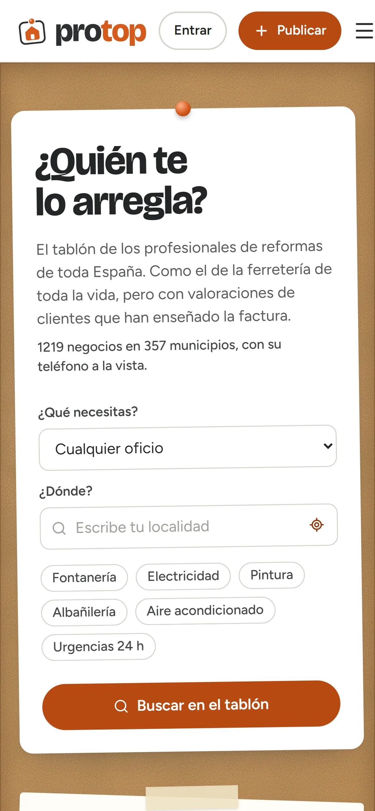

Una recomendación de confianza, cerca de casa
Protop no es un marketplace que cobra comisión ni un buscador frío: es el sitio donde preguntas «¿conoces a un buen fontanero?» y te contestan con nombres, fotos y valoraciones con factura. La primera versión del rediseño salió seria e industrial; la rehice entera alrededor del tablón.
Una tarjeta de visita, clavada
La casa de siempre de Protop dibujada dentro de una tarjeta un poco ladeada, con su chincheta naranja. El nombre pasa a minúsculas en Bricolage Grotesque y conserva la división que ya tenía: pro en grafito y top en naranja.




No se deforma, no se recolorea y no se esconde
Las cartas de colores de la marca
Como las tiras de muestras de la sección de pintura. El naranja de siempre es el protagonista, ahora sobre una luz blanca en lugar del gris frío de la primera versión. El amarillo metro, el de la cinta métrica y el casco, pone los detalles alegres, y la salvia queda para lo que Protop ha comprobado.
| AaBlanco sobre naranja texto | 5,2 : 1 | AA |
| AaGrafito sobre tiza | 12,9 : 1 | AAA |
| AaGrafito sobre amarillo metro | 7,2 : 1 | AAA |
| AaSalvia sobre salvia suave | 5,1 : 1 | AA |
Dos familias y una nota a mano
Los titulares van en minúscula normal, nunca en mayúsculas sostenidas. Las tres son gratuitas, con licencia OFL.
Cada profesional es una tarjeta
Apaisada, con el nombre como protagonista y la reputación al pie. El corcho se reserva para piezas de marca y la portada; en el directorio, las tarjetas van sobre tiza para no cansar la vista. Un solo botón principal por pantalla, siempre con un verbo.
Electricidad Bahía
Instalaciones y reparaciones eléctricas para vivienda y local.
Fontanería Astillero Express
Urgencias de fontanería y mantenimiento de calderas.
Pinturas Cantabria Color
Pintura de interiores, fachadas y alisado de paredes.
Una hoja de pegatinas, una por oficio
Los iconos repiten la forma del logotipo: un dibujo sencillo dentro de un recuadro. En la interfaz van en grafito; en ilustración y redes, en naranja. Para lupa, teléfono o mapa, Lucide con trazo de 2 px.
Trabajo de verdad, no poses de catálogo
Lo que más acerca la marca a la gente son las personas y los trabajos reales de la zona. Luz natural, manos trabajando y gente concentrada en lo suyo.
Un solo gesto propio: la tarjeta que se clava
Cuando aparece el tablón, las tarjetas bajan un poco y se asientan con un pequeño rebote, una detrás de otra. Todo lo demás solo se mueve como respuesta a lo que hace la persona.

TejadosTejados Liébana
- Duración: 150–250 ms para responder a la interfaz y 500 ms para clavar.
- Curva: entra suave y rebota un poco al asentarse, nunca lineal.
- Nunca: secciones que aparecen al hacer scroll, parallax ni tarjetas que se levantan al pasar el ratón.
Como el vecino que sabe de obras
Protop tutea, va al grano y dice las cosas como son. Su confianza viene de los hechos, como la factura o el número de trabajos, no de los adjetivos.
Encuentra a los mejores profesionales garantizados de tu zona.
Profesionales de tu zona, con valoraciones de clientes que han enseñado la factura.
Lo sentimos, no hay resultados para tu búsqueda.
Todavía no hay fontaneros en Liérganes. Prueba con un pueblo cercano o pide presupuestos.
¡¡Regístrate ya y empieza a ganar clientes!!
Tu ficha es gratis y está lista en unos minutos.
Palabras de Protop
Palabras que no usa
El tablón, en la web
La portada de Protop es un tablón de corcho con la ficha-buscador clavada, la papeleta de tiras para pedir presupuestos y una tarjeta en blanco para profesionales.



Identidad de Protop
diseñada por Ronald HerreraVer cómo funciona Protop
La presentación del producto